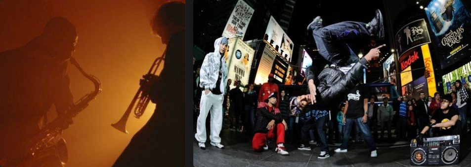

Jazz is a music genre that originated in the African-American communities of New Orleans, Louisiana, in the late 19th and early 20th centuries. Its roots are in blues, ragtime, European harmony, African rhythmic rituals, spirituals, hymns, marches, vaudeville song, and dance music. Since the 1920s Jazz Age, it has been recognized as a major form of musical expression in traditional and popular music. Jazz is characterized by swing and blue notes, complex chords, call and response vocals, polyrhythms and improvisation. As jazz spread around the world, it drew on national, regional, and local musical cultures, which gave rise to different styles. New Orleans jazz began in the early 1910s, combining earlier brass band marches, French quadrilles, biguine, ragtime and blues with collective polyphonic improvisation.
Hip-hop (also known as rap music or simply rap) is a genre of popular music that emerged in the early 1970s alongside an associated subculture in the African-American and Latino communities of New York City. The musical style is characterized by the synthesis of a wide range of techniques, but rapping is frequent enough that it has become a defining characteristic. Other key markers of the genre are the disc jockey (DJ), turntablism, scratching, beatboxing, and instrumental tracks. Cultural interchange has always been central to the hip-hop genre; it simultaneously borrows from its social environment while commenting on it.
